أعيدت طباعتها ١٩٩٧ · مجلد المقدمة والفهارس لمجلة البعثة، نشرة ثقافية شهرية يصدرها بيت الكويت بمصر، جمعها وأعاد طباعتها مركز البحوث والدراسات الكويتية، الكويت، ١٩٩٧
البعثة، المجموعة المعاد طبعها: آل القطامي في فهرس الأعلام
ما هي
يذكر فهرس الأعلام في مجموعة البعثة المعاد طبعها الصفحات التي يرد فيها كل واحد من آل القطامي: جاسم عبدالعزيز القطامي في كل المجلدات، وعيسى القطامي، وعبدالوهاب بن عيسى القطامي، وعبداللطيف عبدالوهاب القطامي، ويعقوب يوسف القطامي، وأحمد وعبدالله ويوسف القطامي، وفضة قطامي. ويذكر فهرس المحتويات كذلك كلمة جاسم القطامي في الحفل الرياضي. وأرقام الفهرس هي أرقام صفحات الطبعة المجموعة، فكل اسم يدل على المقال الذي ورد فيه.
أهميتها
دليل لكل ذكر لآل القطامي في مجلة البعثة، نستعين به للوصول إلى المقالات التي لم تضف بعد إلى سجل العائلة.
صور الصفحات
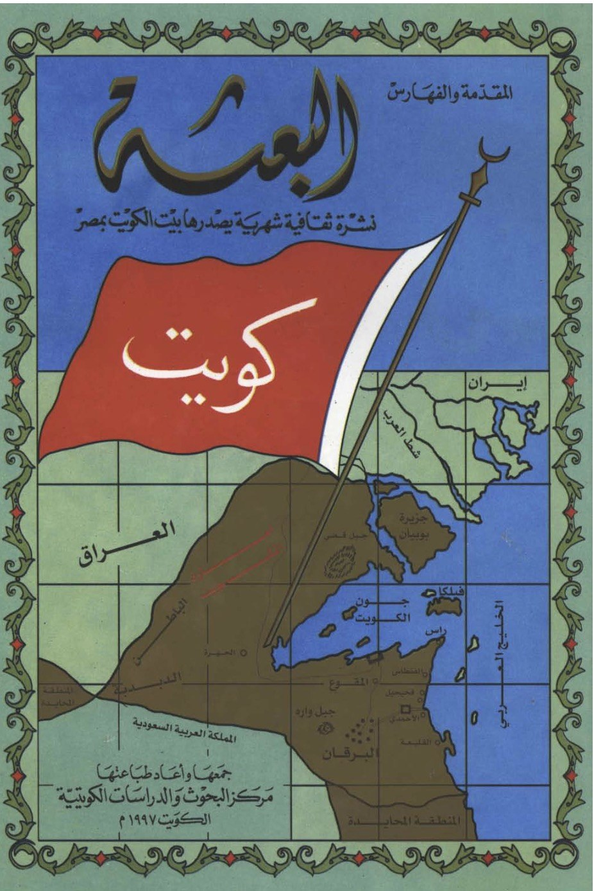
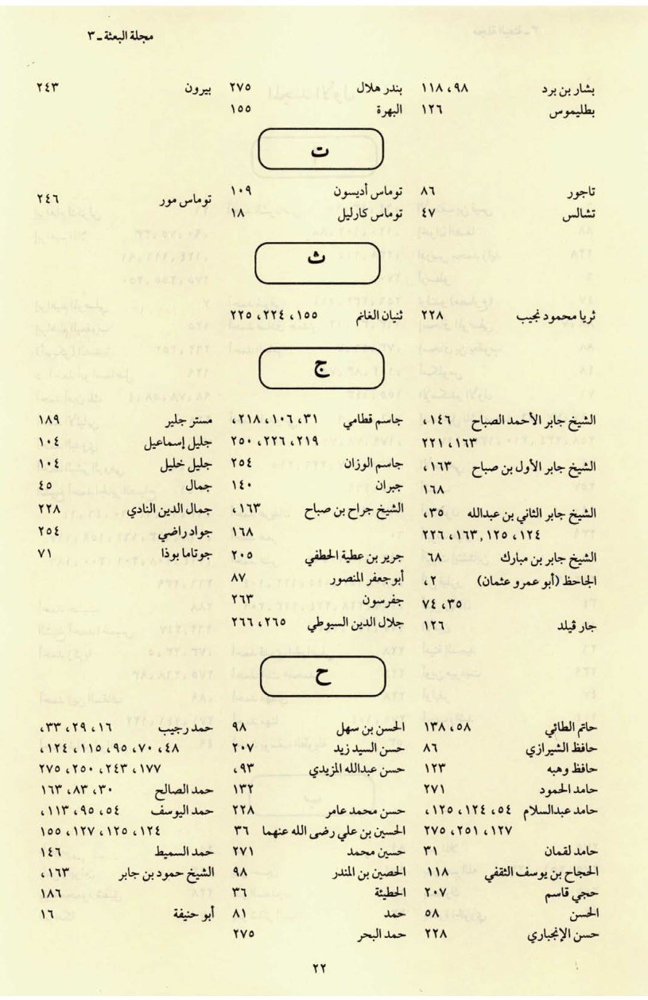


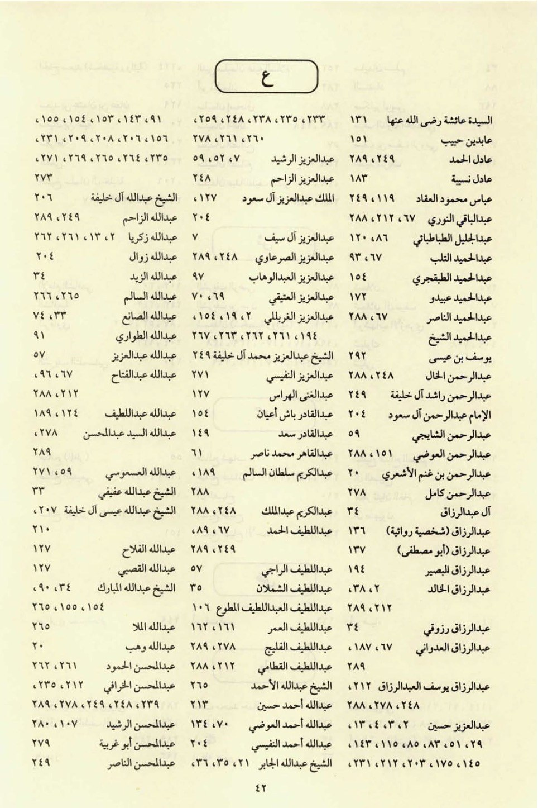
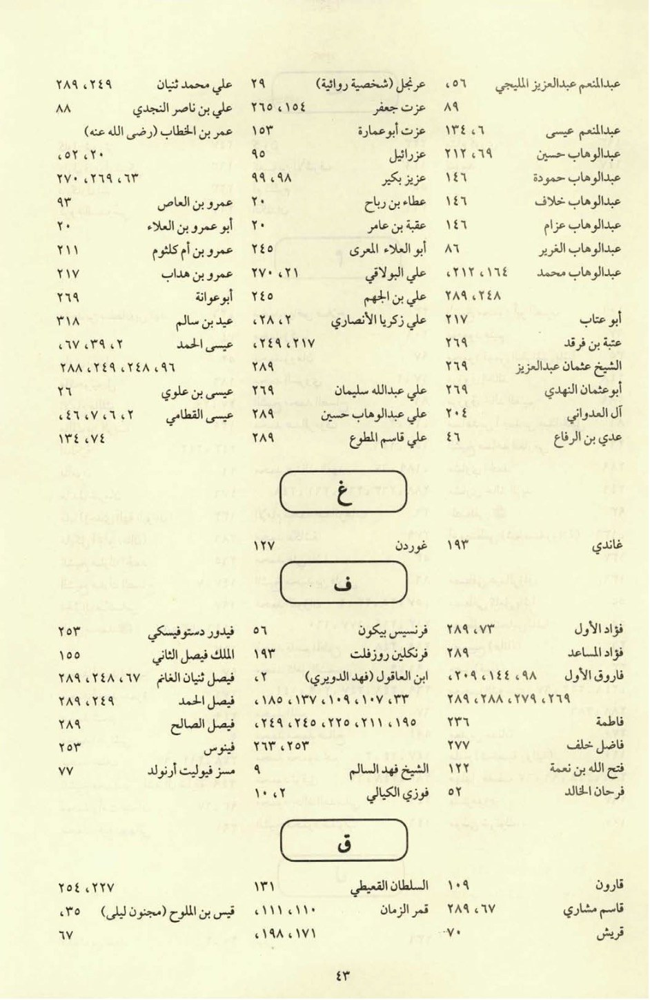
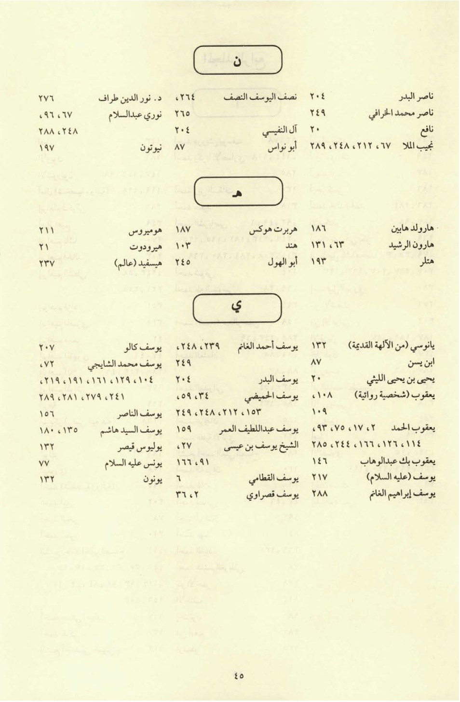

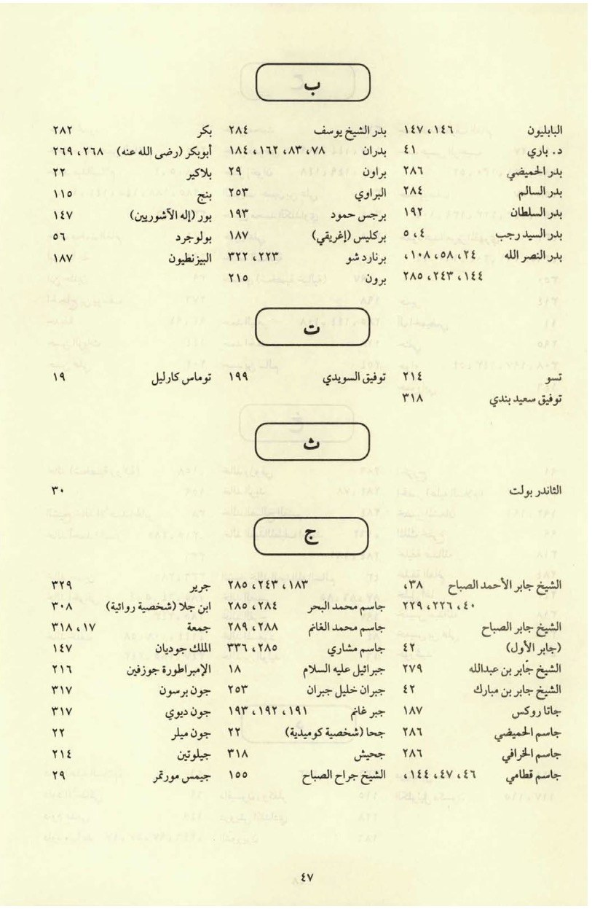
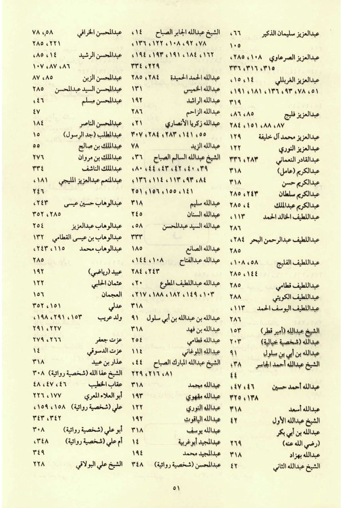
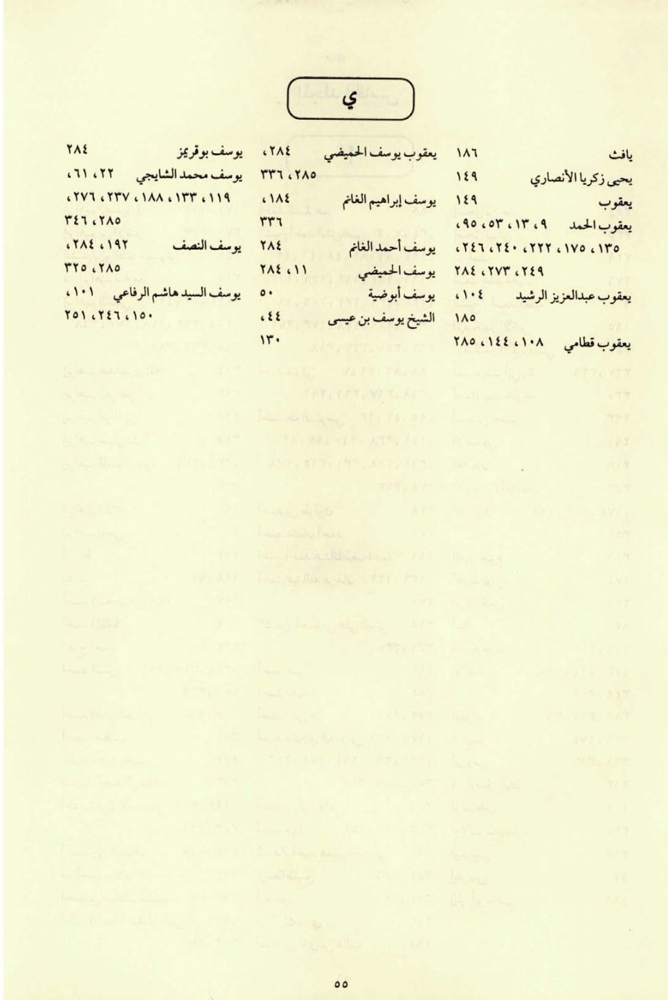

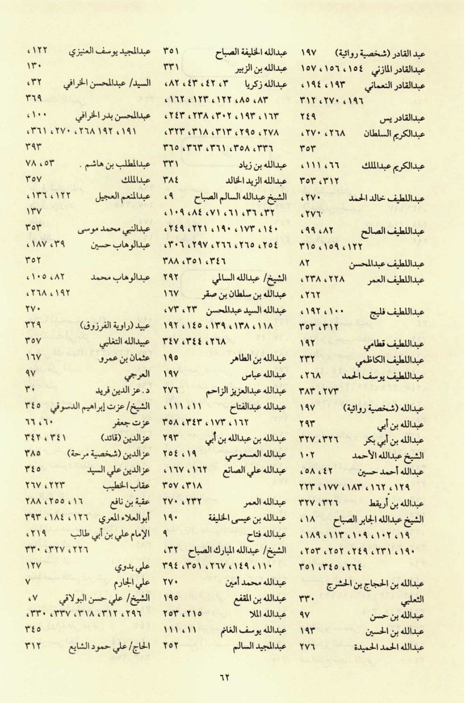
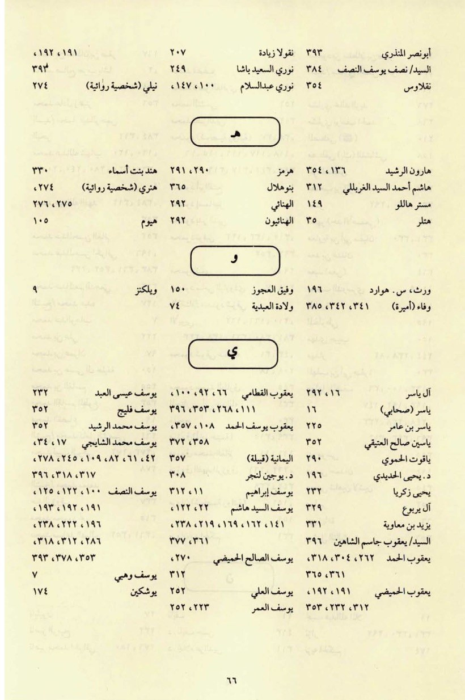

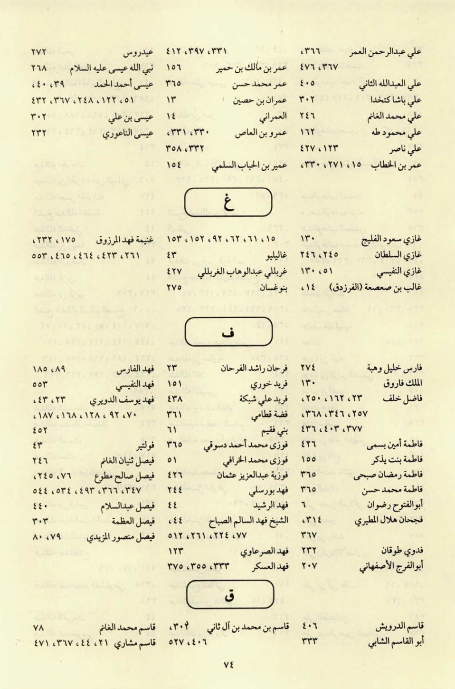

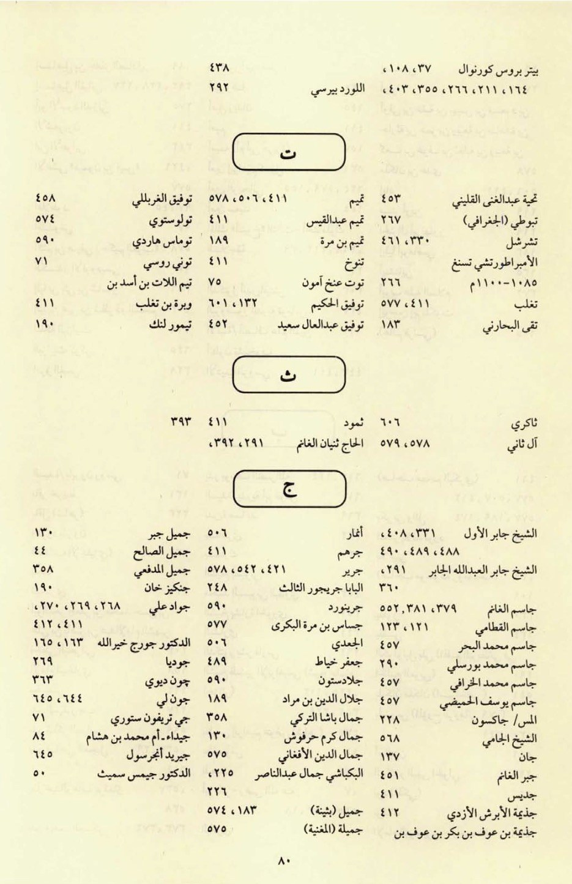


المصادر
البعثة، المقدمة والفهارس، مركز البحوث والدراسات الكويتية، الكويت، ١٩٩٧، فهارس الأعلام ص ٢٢ إلى ٩٦ وفهرس المحتويات ص ٢٠٦
كيف كُتب هذا النص: مصورة من الفهارس المطبوعة. وقد يكون «قاسم قطامي» في صفحتي الفهارس ٢٧ و٣٥ خطأ مطبعيا صوابه جاسم، ولم نطلع بعد على الصفحات التي يشير إليها.
افتح في الموقع التفاعلي